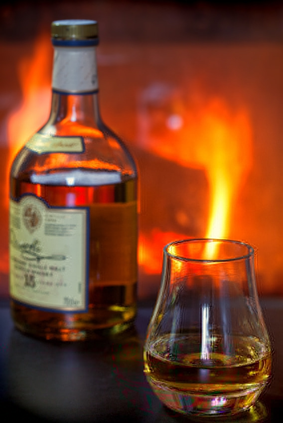
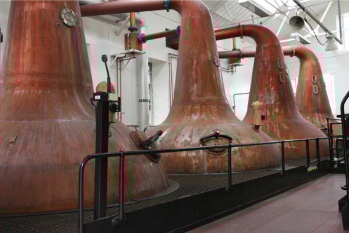
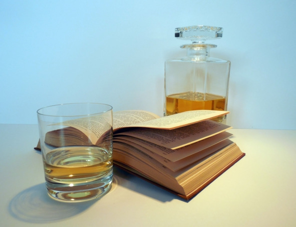
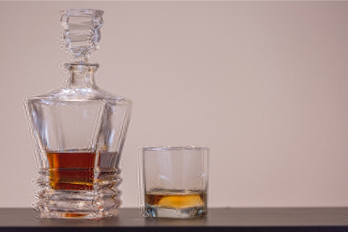
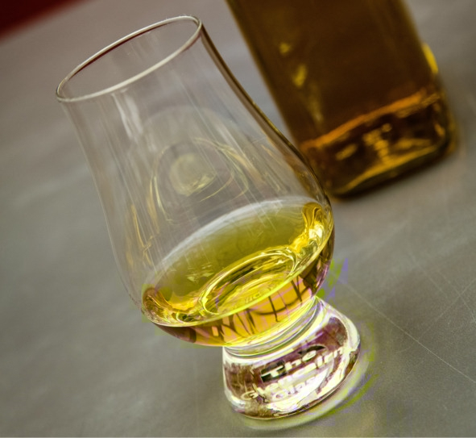
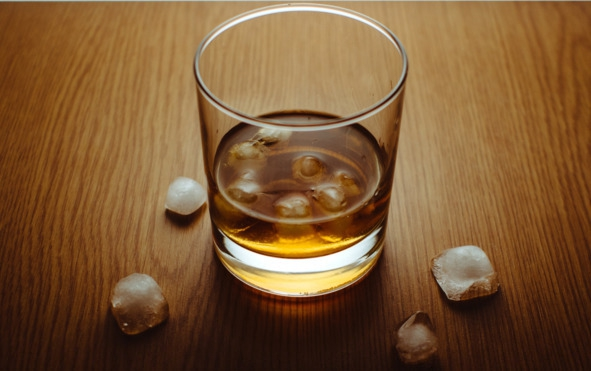
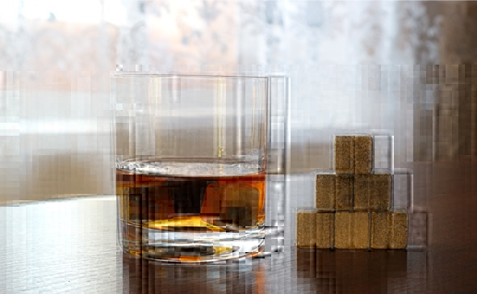
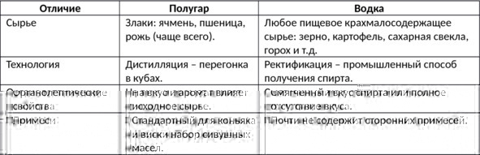

Понятие виски
Виски (whisky или whiskey) – это спиртной напиток крепостью 40—60% об., изготовляемый путем дистилляции браги из соложеного зерна (ячменя, пшеницы, ржи, кукурузы и гречихи) с последующей выдержкой дистиллята в дубовых бочках. Цвет напитка зависит от длительности выдержки – традиционный виски имеет светло-желтый или коричневый цвет.
Английское слово whisky (whiskey) дословно переводится как «вода жизни». Используется сразу два варианта написания в зависимости от региона производства. Шотландские, канадские и японские производители маркируют свою продукцию whisky, а ирландские и американские – whiskey. Также шотландский виски называют scotch (скотч), американский виски из кукурузы – bourbon (бурбон).
История появления вискиПраво называться родиной виски уже несколько столетий оспаривают Ирландия и Шотландия. Холодные скалистые острова этих стран не богаты фруктами и виноградом, поэтому местные жители первыми начали делать крепкие напитки из ячменя, но из-за соседства двух территории теперь практически невозможно установить, кто же начал перегонять зерновую брагу первым.
Шотландская версияШотландцы утверждают, что способ перегонки (дистилляцию) они переняли от миссионеров. Только виноградное вино они заменили ячменным пивом. Миссионеры же узнали о дистилляции от крестоносцев, побывавших на Ближнем Востоке. В свою очередь христианские рыцари «подсмотрели» этот метод у арабов.
Брагу заливали в медный чайник-куб, под которым разводили костер. Закипевшие пары браги конденсировались в змеевике и попадали в приемную посуду. Получившуюся жидкость и называли «водой жизни» (uisge beatha). Первое шотландское письменное упоминание о виски датируется 1494-м годом.
Усовершенствовал дистилляцию и перегонный куб ирландец Эннесс Коффи в 1830 году. Но впервые такой куб применил шотландец Роберт Стейн. Изобретение Коффи увеличило объемы производства виски и добавило напитку новые ароматы. После этого каждая винокурня могла создать неповторимый продукт.
Сначала виски использовался монахами в Шотландии как лекарственное средство. Со временем крестьяне оценили увеселительные свойства напитка и стали сами делать его в фермерских хозяйствах, потом на винокурнях и заводах. На протяжении XIV – XVII веков скотч получил распространение по всей в стране. Но сначала виски напоминал самогон: его пили сразу после перегонки. На выдержку не хватало ни времени, ни терпения. В 1579 году парламент Шотландии разрешил производство виски только знати и дворянству. Фермеров это не остановило. Они делали скотч подпольно, не уменьшая объемов производства. В 1644 году правительство Англии ввело акциз, позволив производить виски только восьми крупным винокурням. Мелкие предприятия оттеснялись, но качество их продукции было выше, чем на крупных производствах. Рост популярности виски способствовал тому, что в 1822 году англичане узаконили винокурни, до этого работавшие подпольно.
Ирландская версияИрландцы убеждены, что виски подарил их народу святой Патрик – покровитель Ирландии. Только вступив на Изумрудный остров – так называют свой край сами ирландцы, – Патрик стал одновременно вершить три богоугодных дела: занялся изготовлением виски – «святой воды», обращением в истинную религию язычников (вероятно, не без помощи виски) и изгнанием из страны ядовитых змей (кстати, успешно).
Ирландцы первыми вышли на международный рынок. Пока несгибаемые шотландцы, напившись виски, отбивались в горах от англичан, ирландцы не только гнали и пили, но и с успехом продавали свой напиток англичанам, которые развозили его по всему миру. В январе 1608 года английская корона выдала в Ирландии первый торговый патент. В него входил «роялти» – королевская доля, как налог на предпринимательство.
Тогда же, в XVII веке, переселенцы из Ирландии и Шотландии начали делать виски в Новом Свете. Заметного успеха добились винокуры графства Бурбон штата Кентукки. В качестве сырья они использовали дешевую в Америке кукурузу, а дистиллят выдерживали в обожженных внутри дубовых бочках.
Классическая технология производства вискиБазовые ингредиенты всегда одни и те же: солод, дрожжи и вода. Иногда в готовый напиток добавляют немного сахара или карамели, но это больше относится к дешевым сортам. Ароматизаторов, красителей и прочих химических добавок в настоящем виски быть не может. Процесс производства состоит из следующих этапов:
Соложение. Виски делают из чистого ячменя или смеси зерновых культур, например, бурбон минимум на 51% состоит из кукурузы, а остальная часть приходится на другие злаки (ячмень, рожь и т. д.), также возможны чисто ржаные или пшеничные сорта. Редко, но встречаются виски из риса, гречихи, других злаков.
Высушенные в солнечном, хорошо проветриваемом помещении зерна заливают водой и оставляют прорастать, периодически меняя воду – так в злаках активируют ферменты, расщепляющие крахмал на простые сахара. Пророщенное зерно называется солодом. Весь процесс занимает до двух недель. Главное – вовремя остановить соложение зерен, чтобы ростки не «съели» весь крахмал, который будет нужен на следующих этапах. Виски из несоложеного (непророщенного) сырья называется «зерновым». Фактически это выдержанный в бочках обычный спирт с грубым вкусом и практически полным отсутствием ароматического букета. Зерновой виски не продается как отдельный напиток, а лишь подмешивается в купажи к «благородным» дистиллятам.
Просушка солода. Готовый солод извлекают из воды и просушивают в специальной камере. В Шотландии на острове Айла и в Японии дополнительно используют дым болотного торфа, чтобы готовый виски приобрел характерный «копченый» вкус и дымный аромат.
Приготовление сусла. Сусло делают так: сухой солод очищают от посторонних примесей, подвергают нескольким тестам на уровень влажности, заражение паразитами и т. д. Прошедшие проверку пророщенные и высушенные зерна перемалывают в крупную муку и подвергают процессу затирания (смешиванию с водой). Помол пересыпают в сусловарочный котел, заливают водой и постепенно нагревают, не забывая помешивать. Будущее сусло последовательно проходит несколько температурных режимов с выдержанными температурными паузами:
– 38—40 °С – мука и вода превращаются в однородную массу;
– 52—55 °С – расщепляется белок;
– 72—75 °С – крахмал осахаривается (превращается в подходящий для дрожжей сахар);
– 76—78 °С – формируются окончательные сахаристые вещества.
Брожение. Осахарившееся сусло заливают в деревянные или стальные чаны и смешивают со специальными спиртовыми дрожжами (каждое солидное предприятие старается иметь свой уникальный штамм). На многих винокурнях дрожжи берут из предыдущей партии браги, в результате процесс становится цикличным и длится десятки, а иногда и сотни лет.
На брожение отводится 2—3 дня при температуре около 37° C. Дрожжи активно размножаются, питаясь кислородом, когда же кислород в браге заканчивается, начинается расщепление сахара, полученного из крахмала в зерне. В конце этой фазы наступает время малолактической ферментации – сбраживания сусла за счет кисломолочных бактерий, а не дрожжей. Готовая к перегонке брага крепостью 5% об. по вкусу напоминает пиво, но без хмеля.
Дистилляция. Отыгравшую брагу подвергают двойной или тройной дистилляции (в зависимости от производителя) в медных перегонных кубах – аламбиках. Материал оборудования очень важен: медь избавляет спирт от «сернистого» привкуса и провоцирует химические реакции, в результате которых в букете виски появляются ванильные, шоколадные и ореховые тона. Впрочем, на новых производствах иногда устанавливают оборудование из нержавеющей стали. После первой перегонки брага превращается в «слабое вино» крепостью около 30% об. Чтобы получить 70-процентный виски, необходимо провести вторую дистилляцию.

Перегонные кубы для дистилляции виски
Для дальнейшего производства виски используют только срединную порцию («сердце»), первую и последнюю фракции («головы» и «хвосты») сливают или отправляют в ректификационную колонну для получения чистого спирта. Даже форма аламбика имеет значение: каждая выемка на медном боку влияет на вкус дистиллята. Поэтому когда на старых вискокурнях меняют оборудование, новое отливают точно по лекалам прежнего, сохраняя все дефекты, «погнутости» и вмятины. Для производства зернового виски и бурбона зачастую вместо традиционного двухкамерного аламбика используют аппарат непрерывной перегонки Коффи. Это устройство перегоняет брагу не порционно, а постоянно. Такой способ производства экономит время и расходы на дистилляцию, но ухудшает качество виски.
Готовый дистиллят разбавляют мягкой родниковой водой до 50—60% об. Некоторые винокурни предпочитают жесткую воду с высоким содержанием микроэлементов, такой виски приобретает характерный минеральный привкус.
Выдержка. Традиционно виски выдерживают в дубовых бочках из-под хереса, но для дешевых сортов иногда берут емкости из-под бурбона (американский виски «стареет» в новых, обожженных изнутри бочках) или даже абсолютно новые, не использованные ранее бочки.
На данном этапе окончательно формируется букет напитка, появляется благородный карамельный оттенок и аромат. В это же время проходят шесть основных процессов:
– экстракция («вытягивание» из древесины аромата, танинов);
– испарение (бочки закрывают не герметично, спирт постепенно испаряется);
– окисление (альдегидов при взаимодействии с материалом бочки);
– концентрация (чем меньше объем жидкости, тем насыщеннее аромат);
– фильтрация (через мембранные фильтры, непосредственно перед купажированием или розливом);
– колоризация (при помощи карамели, чтобы напиток выглядел «благороднее»).
Средний срок выдержки составляет 3—5 лет, но существуют сорта, которые проводят в бочках 30 лет и более. Чем дольше выдерживается виски, тем больше «доля ангелов» – объем испарившегося алкоголя – и выше цена. Со временем древесина дуба впитывает из спирта большинство сивушных масел, насыщает напиток лактонами, кумарином и танином, однако если передержать, виски приобретет «деревянный» привкус.
Купажирование. Представляет собой процесс смешивания дистиллятов (иногда в состав еще добавляют зерновые спирты) разного срока выдержки и (или) с разных винокурен. Единого рецепта нет: у каждой марки свои секреты. Количество смешиваемых сортов может доходить до 50, и все они будут отличаться по вкусу и выдержке. Пропорции подбирает опытный мастер производства – купажист. Обычно такой человек трудится на предприятии десятки лет и задолго до выхода на пенсию готовит себе замену из числа других сотрудников, постепенно передавая секреты и наработки.
Смысл купажирования в том, чтобы гарантировать покупателю неизменный вкус любимого бренда из года в год, независимо от особенностей урожая или технологии. Также смешивание позволяет создавать новые виски с уникальным вкусом (расширять ассортимент продукции) из доступных предприятию дистиллятов, меняя только пропорции.
Купажирование не является обязательным этапом: многие ценители предпочитают пить чистый односолодовый виски, произведенный одной винокурней, эта категория называется single malt, а купажированный виски маркируют надписью blended. Споры о превосходстве одной категории над другой не имеют смысла, это больше вопрос вкуса и философии, чем реального влияния технологии производства на качество.
Купажированный виски еще несколько месяцев выдерживают в дубовых бочках, чтобы смешанные сорта «поженились» – превратились в один гармоничный напиток, а не коктейль вкусов.
Розлив. После финальной выдержки виски проходит фильтрацию (механическую, чтобы отделить жидкость от частичек дерева, других твердых фракций), иногда напиток еще раз разбавляют водой до получения предусмотренной регламентом крепости. Только после этого готовый продукт разливают в бутылки и отправляют в магазины.
На дешевых производствах иногда практикуют сомнительный метод холодной фильтрации, когда виски охлаждают приблизительно до -2° C. В результате жирные кислоты всплывают на поверхность и легко удаляются механическим путем. После холодной фильтрации виски теряет часть органолептических свойств (аромата и вкуса), но выглядит презентабельнее – не мутнеет в стакане при добавлении льда, кажется янтарным и прозрачным.
Разница между водкой, виски и коньяком1. Сырье. Водка является смесью ректифицированного (хорошо очищенного) этилового спирта и воды. Коньяк производят только из дистиллятов виноградного происхождения с последующим выдерживанием в дубовых бочках. Основой виски являются зерновые дистилляты.
2. Регион производства. Хотя водка считается русским напитком, но может быть произведена в любой стране мира, название «водка» не защищается по региональному принципу, а качество зависит от степени очистки спирта и выбранной воды, у каждой страны свои стандарты.
Коньяком может называться только напиток, произведенный во Франции. Государство строго контролирует производителей, поэтому качество настоящего коньяка всегда отменное.
Виски же считается национальным спиртным ирландцев и шотландцев, но производство налажено во многих странах мира, кроме Ирландии и Шотландии это США, Канада, Япония и пр. Общепринятых мировых стандартов контроля качества виски не существует, вследствие чего риск купить низкокачественный виски намного выше, чем в случае с коньяком (опять же – настоящим, а не с постсоветского пространства) и даже водкой.
3. Крепость. Стандартная крепость водки – 40% об., но встречаются марки с содержанием спирта 35—50%. Законодательство Франции запрещает продажу коньяка, если его крепость ниже 40% об., максимальная концентрация спирта не ограничена, но на практике почти все коньяки содержат 40—45% об. спирта. Крепость виски не регламентируется и зависит от производителя, в большинстве случаев она колеблется от 40 до 50% об., но в продаже также можно найти сорта крепостью до 65—70% об.
4. Культура употребления. В этом аспекте водка кардинально отличается от коньяка и виски. В России принято пить водку из рюмок залпом во время застолья. Вкус самой водки не имеет особого значения, важнее хорошая компания. В Европе и США водка считается идеальной основой для коктейлей, поскольку не имеет ни запаха, ни вкуса.
Виски и коньяк больше подходят для ценителей алкоголя, которые собираются узким кругом в спокойном тихом месте, чтобы провести время за беседой или другим интересным занятием, например, игрой в карты. Виски и коньяк пьют из специальных бокалов маленькими глотками, стараясь уловить особенности аромата и вкуса. После дегустации напиток обсуждают, сравнивая выбранную марку с другими.
Виды вискиВ зависимости от сырья и способа производства выделяют следующие сорта виски:
Односолодовый виски (single malt, «сингл молт»)Производится на одной винокурне только из соложеного зерна (преимущественно ячменя). Главная особенность виски single malt – спирты принадлежат к одной партии или как минимум одной винокурне. Купажи с другими сортами не допускаются – максимум, при бутилировании изготовитель может смешать порции с разной выдержкой, но получены они будут на этом же производстве из того же ячменя.
Несмотря на то что чаще всего односолодовый виски ассоциируется с шотландским скотчем, односолодовым может быть любой виски, независимо от страны производства. Однако именно в Шотландии действуют самые жесткие правила: в состав напитка должны входить только соложеный ячмень, дрожжи и вода (иногда допускается использование карамельного красителя), дистилляция обязательно в медных кубах, а полученный виски минимум 3 года выдерживают в дубовых бочках объемом не более 700 л. Обычно производители в других странах также придерживаются указанной схемы, но это жест доброй воли.
Виски single malt продают в чистом виде как отдельный напиток или используют в качестве основы для составления купажей – смеси нескольких «сингл молтов», иногда с добавкой зерновых спиртов. При этом вкус и аромат разных партий single malt может отличаться – сказывается даже незначительное изменение технологии производства, свойств солода и древесины бочки.
Популярные марки single malt: Macallan («Макаллан»), Bushmills («Бушмилс»), Glenfiddich («Гленфиддих»), Glenmorangie («Гленморанжи»), Singleton («Синглтон»).
Купажированный виски (blended whisky, «блендед»)Продукт, получаемый путем смешивания солодовых (single malt) и зерновых сортов виски в разных пропорциях. Обычно в состав купажированного виски входить 15—50 солодовых сортов и 3—4 зерновых сорта сроком выдержки не менее трех лет.
Согласно классификации Ассоциации шотландского виски (Scotch Whisky Association), любой купажированный виски бывает трех видов:
– standard blend – выдержка не менее трех лет;
– de luxe blend – содержат не менее 35% солодовых спиртов, выдержка в бочках минимум 12 лет;
– premium – виски выдержкой больше 12 лет.
На этикетке указывают выдержку самого «молодого» из купажированных сортов, причем в бутылке виски уже не стареет, поэтому возрастом напитка считается только время, проведенное в бочке.
Категория blended представлена следующими известными марками: Johnnie Walker («Джонни Уокер»), Jameson («Джемесон»), Chivas Regal («Чивас Ригал»), Jim Beam («Джим Бим»), Ballantines («Баллантайнс»), Grant’s («Грантс»).
Зерновой виски (grain whisky, «грейн»)По сути является спиртом-ректификатом из зерна. В чистом виде зерновые сорта виски обычно не продаются, так как практически не имеют вкуса и аромата. В большинстве случаев зерновые виски используются в купажах.
Особенности виски в разных странах ШотландияНастоящий скотч должен пройти все стадии изготовления, начиная от получения солода и заканчивая выдержкой готового дистиллята в дубовых бочках, исключительно на территории Шотландии. Есть и дополнительные условия:
– натуральные ингредиенты: солод, вода и дрожжи;
– крепость сразу после перегонки не менее 94,8% об., чтобы готовому напитку передался вкус исходного сырья;
– финальная крепость не менее 40% об.;
– выдержка от трех лет в бочках объемом до 700 л;
– без ароматических добавок, кроме пищевой карамели.
Традиционно в Шотландии выделяют следующие регионы производства:
– Высокогорье (Highlands). Здесь расположено всего 30 вискокурен, на которых производится мягкий, но глубокий и крепкий солодовый виски. Во вкусе чувствуются цветочные и пряные тона.
– Равнины (Lowland). Количество винокурен постепенно сокращается. Равнинный виски отличается спокойным, бархатистым сухим вкусом. Именно в этой местности напиток перегоняют три раза вместо двух.
– Спейсайд (Spayside). В этом регионе расположена почти половина всех шотландских винокурен. Именно спейсайдский виски считается эталоном скотча.
– Остров Айла (Islay). Восемь небольших производств виски с отчетливым дымным ароматом и легкой солоноватостью.
– Кэмпбелтаун (Campbeltown) – город, имеющий статус отдельного производителя скотча, но на данный момент большинство его винокурен закрылись. Виски из этого региона отличается особым пряным букетом.
– Гебридские и Оркнейские острова (Island) – островные шотландские виски запоминаются солоноватым вкусом с торфяными и дымными нотками.
ИрландияВ XIX веке ирландский виски отличался достойным качеством и пользовался популярностью не только у себя на родине, но и во всей Европе и даже в Америке. Эта идиллия продолжалась вплоть до начала XX века, когда ряд политических неурядиц привел к ослаблению позиций Ирландии на международном рынке. Экономический кризис, Первая мировая война, «сухой закон» в Америке – все это вылилось в то, что ирландский виски оказался никому не нужен, кроме самих ирландцев. В 1950-х годах в стране осталось всего три винокурни.
В результате слияний, объединений и различных маркетинговых перестановок на острове Ирландия осталось четыре основных производителя, не считая нескольких юных компаний, основанных в 2012—2013 годах и еще не вставших как следует на ноги.
Чтобы считаться настоящим ирландским виски, ячменный дистиллят должен соответствовать трем критериям:
– место производства и выдержки – остров Ирландия (северная или южная части);
– концентрация спирта в дистилляте не должна превышать 94,8% об.;
– выдержка в дубовых бочках объемом не более 700 л от трех лет или дольше.
Отличия между ирландским и шотландским вискиГлавное отличие шотландского скотча от ирландского виски касается знаменитой торфяной «копчености», которая появляется благодаря сушке солода торфом. Производители утверждают, что, кроме всего прочего, шотландский напиток обязан своим неповторимым вкусом местной воде.
Другая отличительная черта – в Ирландии виски подвергают тройной перегонке, а не двойной. Наконец, в Шотландии за основу берут исключительно ячменный солод, а в Ирландии могут добавить рожь.
ЯпонияЯпонский виски – напиток, созданный «по образу и подобию» скотча: начав производить ячменный дистиллят, японцы взяли за образец шотландский виски. Результат получился настолько хорош, что при слепом тестировании современные дегустаторы не всегда могут отличить некоторые японские сорта от шотландского оригинала. Сегодня в Японии насчитывается несколько производителей, однако самыми популярными и известными считаются компании Suntory и Nikka. Первой принадлежит около 70% рынка, второй – 15%, оба бренда выпускают все основные виды напитка: купажированный, зерновой и односолодовый виски.
Японский виски во многом обязан появлением двум людям: Синдзиро Тори и Масатаке Такетсуру. Первый был владельцем компании Kotobukiya (позже переименованной в Suntory), а второй – его сотрудником. Сперва господин Тори занимался импортом западного алкоголя, в частности португальских вин, однако затем заинтересовался виски и решил наладить производство у себя на родине. Он построил первую винокурню в пригороде Киото, поскольку именно тот регион славится особенно вкусной водой.
В свою очередь, юный Такецуру был родом из семьи производителей саке, изучал искусство изготовления виски в Шотландии, где проходил практику на лучших производствах. Вернувшись домой в 1920-х годах, он внес неоценимый вклад в дело популяризации виски в Японии. В 1934 году господин Такецуру уволился из Kotobukiya и основал собственную компанию Dainipponkaju (известную сегодня под именем Nikka). Производство располагалось недалеко от Хоккайдо. Первыми не-японцами, попробовавшими японский виски, стали американские солдаты, которые в 1918 году описывали этот напиток как «скотч, сделанный в Японии».
Особенности восточного менталитета и уклада не могли не повлиять на производство. В то время как в Шотландии принято купажировать виски с разных заводов, в Японии компании используют только собственные дистилляты. В крайнем случае, в купаже может содержаться оригинальный скотч – но никак не продукция японского конкурента.
Разница между японским виски и скотчемНесмотря на идеально скопированную технологию двойной дистилляции в перегонном кубе, у японского виски получается другой вкус. Причины:
– вода в Японии более мягкая, содержит меньше минералов и примесей;
– японцы перегоняют брагу в кубах разной формы и объема, что позволяет получить более широкий спектр ароматов и вкусов;
– в Стране восходящего солнца совсем другой климат, это сказывается на всех этапах производства от выращивания зерна до выдержки дистиллята в бочках.
КанадаКанадский виски (Canadian whisky или Canadian rye whisky) – напиток с собственной историей и узнаваемым вкусом. Интересно, что в самой Канаде виски часто называют «ржаным», хотя количество этого злака в составе может быть крайне незначительным, а надпись rye на этикетке будет скорее данью традиции, чем указанием на реальный сорт.
Изначально виски на территорию Канады привезли британцы, затем страна познакомилась с американской вариацией напитка – кукурузным бурбоном, а в 1794 году начала производить собственную версию. В 1850 году в Канаде было более 200 вискокурен, а к нашему времени осталось только девять. Это объясняется высокими акцизами: производителям было проще сливаться в крупные предприятия, чем поддерживать работу мелких компаний. В наше время Канада занимает третье место в мире по производству виски, удерживая 17% объема мирового рынка.
Отличительная черта канадского виски – купажированность. Канадцы не очень любят классический односолодовый вариант и больше тяготеют к блендам.
За основу берут почти нейтральный по вкусу и запаху 90-95-процентный «базовый» дистиллят (фактически чистый спирт), изготавливаемый из кукурузы и ячменного солода методом непрерывной перегонки на бражной колонне. Основу разбавляют более мягким «ароматным» ржаным или пшеничным виски, полученным на классическом дистилляторе (крепость этого компонента составляет 65% об., присутствует индивидуальная органолептика, формирующая вкус и аромат готового виски). Кроме того, в состав могут входить ароматизаторы, карамель для придания более насыщенного цвета, соки и бренди. Выдержка канадского виски составляет не менее трех лет, при этом никак не регламентируется вид бочек (только два ограничения – должны быть дубовыми и не более 700 л), а также процентное соотношение базовых и ароматных спиртов. На выходе после разбавления водой получается напиток крепостью 40% об.
Известные производители: Seagram’s, Canadian Club, Black Velvet, Windsor.
Как пить вискиЗачастую культуру употребления виски формируют голливудские фильмы, в которых напиток смешивают с колой, содовой или льдом. С телевизионных экранов эти методы перекочевали в бары, рестораны и наши дома, став нормой. На самом деле добавлять лед, разбавлять содовой и смешивать с колой можно лишь виски невысокого качества, ароматический букет и вкус которых не представляют ценности. Хороший же виски пьют в чистом виде.
ТемператураПеред употреблением виски следует охладить до +18—20° C. Более теплый напиток сильно разит спиртом, а при температуре ниже 18° C не чувствуется аромат даже самого лучшего виски.
БокалыБокалы для виски бывают следующих видов:
– Тумблер (tumbler) – бокал емкостью 200 мл с прямыми стенками и толстым дном. Благодаря высокой прочности часто используется в барах и ресторанах для подачи алкогольных коктейлей и виски в чистом виде. Тумблер подходит лишь для дегустации простых сортов виски, поскольку его геометрическая форма не позволяет уловить нотки более утонченных напитков с длительной выдержкой.

Тумблер
– Рокс (rocks) – бокал емкостью 250 мл, используемый барменами для быстрой подачи. Рокс часто называют упрощенным вариантом тумблера, он тоже имеет толстое дно и прямые стенки. Бокалы типа рокс подходят для подачи виски со льдом и простых напитков без утонченного ароматического букета. Для дегустатора нет разницы между тумблером и роксом. Но рокс удобнее для барменов, в него можно быстрее добавить лед и налить порцию напитка. Рокс – отличный выбор для недорогих купажированных сортов виски. Еще он идеально подходит для бурбона.

Рокс
– Тюльпан (tulip) – вид бокала объемом 100—140 мл, использующийся для дегустации практически любых сортов среднего и премиум-сегментов. Геометрическая форма тюльпана с расширенным основанием и зауженным верхом позволяет уловить малейшие нотки запаха. Раньше бокал этого типа считался профессиональным, его было сложно найти в продаже. Теперь тюльпаны продаются повсеместно, они подходят для дегустации любого элитного алкоголя, начиная от вина и заканчивая коньяком.

Тюльпан
В идеале ценитель виски должен иметь все три типа бокалов и пользоваться каждым из них по мере надобности.
Процесс подачи и дегустацииИрландцы категорически не приемлют разбавления виски водой, а шотландцы не привыкли закусывать свой скотч.
В мужской компании виски разливает хозяин или каждый гость наливает себе сам. Для нормального восприятия гаммы напитка бокал наполняют максимум на треть. Если в обществе есть дамы, за их бокалами следит мужчина.
Шотландцы пользуются правилом пяти S:
– Sight (любоваться) – оценить цвет;
– Smell (вдыхать) – почувствовать запах;
– Swish (смаковать) – пригубить и почувствовать вкус;
– Swallow (проглотить) – сделать первый глоток;
– Splash (разбавить) – разбавить водой для полного раскрытия вкуса и аромата, элитные напитки не разбавляют.
ЗакускаПервыми начали закусывать виски ирландцы. Они, в отличие от шотландцев, не считают это кощунством, поэтому пьют виски с устрицами, семгой, копченым лососем, запеченным мясом и дичью. В Ирландии считают, что лучше пить виски с закуской, чем разбавлять его другими напитками, портящими вкус.
Опытные кулинары советуют подбирать закуску к виски, исходя из сорта напитка. Очень сложно найти блюда, подходящие к любому сорту:
– виски с дымным или фруктовым ароматом и острым вкусом лучше закусывать дичью и говяжьим языком. Также эти блюда хорошо сочетаются с шотландскими односолодовыми виски;
– мягкие сорта закусывают копченой рыбой;
– к виски с травяным ароматом подают любые блюда из морепродуктов;
– сорта, имеющие дымно-торфяной аромат, можно закусывать хорошо прожаренной говядиной или бараниной.
Виски со льдомСо льдом пьют только дешевый виски. Если напиток не может похвастаться изысканным букетом, ему нечего терять кроме чрезмерной крепости, а иногда и неприятного привкуса. Эти недостатки помогает скрыть лед – появившаяся при таянии вода снижает крепость, а охлаждение смягчает вкус и сглаживает «спиртовой» аромат, позволяя букету хоть как-то раскрыться. Согласно легенде, традицию добавлять лед в виски придумали бармены – так можно не долить клиенту спиртное, но визуально объем порции не изменится.

Советы:
– размер кубиков имеет значение: ледяные «чипсы» быстрее тают и сильнее разбавляют напиток, в то время как крупные кусочки льда просто охлаждают виски, минимально влияя на вкус;
– нельзя использовать старый лед, замороженный несколько месяцев назад, он впитывает ароматы;
– для кубиков нужна качественная вода – например, негазированная минералка.
Камни для виски вместо льдаПри таянии лед разбавляет виски водой, ухудшая вкус. Это проблему решил Эндрю Хеллман, он предложил заменить лед отшлифованными каменными кубиками. Позже их стали называть «камнями для виски» (Whisky Stones).
Сделанные из безопасного материала стеатита (мыльного камня), камни для виски прекрасно аккумулируют холод или тепло, не влияя на вкус. Виски остается холодным 25—30 минут. Залежи стеатита есть только в США (штат Вермонт) и Скандинавии. После добычи материал подвергают ручной полировке. Камешки получаются гладкими и не царапают стекло бокалов. Скандинавские народы используют стеатит для изготовления посуды, приписывая материалу целебные свойства.

Камни охлаждают виски, но не влияют на вкус
Перед первым использованием камни хорошо моют губкой в теплой воде, чтобы избавиться от остатков пыли. За 2—3 часа до начала вечеринки их охлаждают в морозильной камере. На одну порцию 50—70 мл достаточно положить в бокал 3—4 камня. После применения камни рекомендуется сполоснуть холодной водой и положить обратно в чехол. При соблюдении этих условий они прослужат многие годы. Еще камни для виски – отличное средство для поддержания температуры горячих напитков, например, кофе или чая. Достаточно положить их в микроволновую печь на 30 секунд, затем добавить 2—3 штуки в чашку с напитком.
При выборе камней для виски нужно обратить внимание на материал, из которого они сделаны. В продаже появились дешевые китайские аналоги из гранита, замаскированные под стеатит. Из-за пористой структуры гранит впитывает запахи, ухудшая органолептические свойства виски.
Чем разбавить вискиВодой. Для самых дорогих сортов достаточно всего несколько капель чистой родниковой воды (оптимально – той же, на основе которой изготовлен дегустируемый виски), для раскрытия букета. Более дешевые виды можно разбавлять газировкой. Температура воды – комнатная, пропорции на вкус, максимум – 50 на 50.
Соками. Получаются в меру крепкие напитки с интересным фруктовым привкусом. Неплохой вариант для вечеринки или дискотеки. Можно разбавлять виски любым холодным соком. Самые популярные: яблочный, вишневый, лимонный, апельсиновый, виноградный и ананасовый. На одну часть виски добавляют от одной до пяти частей сока.
Колой, содовой, другими газировками. Американский метод, благодаря которому можно полностью заглушить вкус спиртного. Используется, когда нужно замаскировать горечь дешевых сортов, сделать сладкий слабоалкогольный коктейль или просто напиться. В классическом варианте колу смешивают с виски в равных частях, содовую и «Спрайт» – в пропорции 1:2 (одна часть содовой к двум частям виски).
Кофе и чаем. Хороший вариант в холодное время года. Можно добавить 2—3 столовые ложки виски в чашку или смешать напитки в других пропорциях (безалкогольного компонента должно быть в 2—3 раза больше).
Молоком. Спорное сочетание, вызывающее восторг у одних и рвотные позывы у других. Готовить виски с молоком лучше в виде коктейлей, добавляя другие ингредиенты, например, мед, корицу, мускатный орех.
Что такое двойной вискиЛогично предположить, что так называется двойная порция, вопрос в другом – сколько это будет в миллилитрах. Все зависит от бара или хозяина дома, но исторически сложилось, что стандартной мерой считаются полторы унции, то есть 45 мл. Соответственно, двойной виски – это 90 мл. В ресторанах значение могут и округлить до 100 мл.
Традиция появилась в американских барах, но жесткой корреляции нет: двойная порция выгоднее и удобнее, особенно если вечер планируется долгим, и это никак не зависит от страны.
Бурбон – американский кукурузный вискиБурбон является воплощением традиций американского винокурения. Напиток очень похож на другие виды виски, но имеет характерные особенности, позволяющие выделить его в отдельную подгруппу.
Бурбон (англ. bourbon) – американский спиртной напиток желтого цвета крепостью 40—45% об. с карамельно-сладковатым привкусом, полученный методом дистилляции браги из смеси злаков, в составе которой минимум 51% кукурузы. Бурбон является названием, контролируемым по происхождению, производить напиток можно по всей территории США, однако большинство винокурен сконцентрированы в штате Кентукки, где вода отличается низким содержанием железа и высоким процентом известняка.
Название «бурбон» происходит от фамилии французских аристократов, в честь которых был назван округ в штате Кентукки. По другой версии напиток получил такое имя, потому что был особенно популярен на улице Bourbon Street в Новом Орлеане.
Требования к бурбону согласно Федеральным стандартам идентичности дистиллированных спиртов:
– произведен на территории США;
– в смеси злаков минимум 51% кукурузы;
– дистиллят выдержан в новых бочках из американского дуба, обожженных изнутри;
– срок выдержки – от трех лет;
– крепость дистиллята при перегонке не более 80% об.;
– крепость перед выдержкой в бочках – не более 62,5% об.;
– крепость при розливе в бутылки – от 40% об.
Интересно, что всем этим требованиям отвечает Tennessee Whiskey (теннессийский виски), например, марка Jack Daniel’s, но в производстве напитка из Теннесси используется один дополнительный этап – фильтрация дистиллята через уголь сахарного клена до выдержки в бочках, поэтому «Джек Дэниэлс» маркируют как Tennessee Whiskey.
Производство бурбона в XVII веке начали ирландские переселенцы в Новый Свет. Первые упоминания о рецепте датируются 1789 годом, когда священник Элайя Крег дистиллировал напиток для своих прихожан. Также он придумал выдерживать бурбон не в обычных бочках, а в обожженных изнутри. Согласно легенде, в распоряжении святого отца оказались некондиционные дубовые емкости из-под рыбы, которые баптисту стало жаль выбрасывать, и он решил рискнуть, а для удаления специфического рыбного запаха обуглил внутреннюю часть.
Первая винокурня появилась в городе Парис в конце 1790-х годов, название «бурбон» закрепилось за американскими виски в конце XVIII – начале XIX века. Также свою лепту в развитие «бурбоноварения» внес Джеймс Крау – возможно, именно он придумал метод sour mash («кислое сусло»), при котором в новую порцию сырья добавляется немножко от перебродившего старого. Так создается идеальный для дрожжей pH-баланс, переносятся дрожжи, процесс брожения проходит быстрее и лучше. Окончательно технология производства бурбона сформировалась лишь в 1930-х годах. В 1964 году был принят Федеральный закон США, закрепляющий за бурбоном статус национального достояния.
Разница между бурбоном и другими вискиБурбон не проходит стадию соложения основного ингредиента – кукурузы. Сырье для дистилляции (51% кукурузных зерен, рожь, пшеницу) измельчают и проваривают, затем осахаривают (расщепляют крахмал в зернах на сахар) ячменным солодом, остужают, добавляют в смесь дрожжи, взятые из предыдущей партии, и ждут, пока сусло ферментируется (бродит), затем дважды перегоняют брагу в аламбике.
Второе отличие – для бурбона используют обожженные бочки, а остальные виски выдерживают в обычных. Считается, что благодаря этому бурбон стареет (впитывает вещества из бочки) быстрее других виски.
Как пить бурбонТрадиционно выдержанный и качественный бурбон пьют из бокалов с толстым дном, наполняя на одну четверть. Напиток подают при комнатной температуре. Сначала нужно подержать бокал пару секунд в руках, согревая теплом ладони. Затем оценить аромат напитка. В зависимости от вида бурбона и выдержки почувствуются тона ванили, старого дерева, табака, шоколада, изюма или карамели. Дальше сделать небольшой глоток, во время которого жидкость на несколько секунд задержать во рту, чтобы она попала на язык.
Закуской могут быть разнообразные блюда, начиная от мяса и заканчивая фруктами или сырами. Но истинные ценители предпочитают пить бурбон без закуски, сочетая его с ароматной сигарой.
Бурбон среднего и бюджетного ценовых сегментов можно пить со льдом, разбавить негазированной минеральной водой или соками (вишневым, из зеленого яблока, апельсиновым, грейпфрутовым), чтобы перебить резкие спиртовые тона. Оптимальные пропорции – 1:1 или 1:2. В некоторых американских штатах бурбон разбавляют колой или содовой, пропорции не меняются.
Полугар (хлебное вино) – славянский ответ вискиБольшинству наших современников слово «полугар» ни о чем не говорит, хотя еще 150 лет назад его значение понимали все жители Российском империи. Просто сначала царской, а затем и советской водочной монополии этот напиток мешал получать сверхприбыль. Неугодное спиртное искусственно убрали с рынка, запретив производство. В последние несколько лет интерес к хлебному вину (второе название полугара) возродился. Не все старинные рецепты были утеряны, на их основе разработана современная технология производства.
Полугар (хлебное вино) – это дистиллят двойной перегонки браги из ячменного, ржаного или пшеничного солода крепостью 38,5—45% об. В отличие от коньяка или виски, которые несколько лет выдерживаются в дубовых бочках, качество полугара улучшают естественными методами очистки: древесным углем, хлебом, молоком и т. д. Напиток готов к употреблению спустя 3—5 дней после приготовления.
В XVII – XIX вв. хлебное вино было национальным русским спиртным напитком. В основном полугар производили богатые помещики для собственных нужд по рецептам, которые передавались из поколения в поколение. В 1895 году по приказу министра финансов Российской империи С. Ю. Витте хлебное вино запретили, заменив смесью этилового спирта-ректификата с водой – обычной водкой, на производство которой была установлена царская монополия.
Слово «полугар» появилось благодаря оригинальному методу проверки качества, который официально ввел Николай I в 1842 году. Хлебное вино наливали в специальный ковшик и поджигали. После выгорания объем оставшейся жидкости измеряли, если он был наполовину меньше изначального (выгорела половина), значит, напиток успешно прошел проверку.
Как пить полугарВ старину полугар пили из специальных граненых рюмок (лафитников) объемом 50—150 мл. Оптимальная температура подачи – 8—10° C. Необязательно рюмку опрокидывали залпом, часто вкусом хлебного вина просто наслаждались, потягивая маленькими глотками, чтобы уловить приятное послевкусие. Напиток прекрасно сочетается с традиционными русскими мясными, солеными, кислыми, чесночными и перчеными блюдами.
Разница между полугаром и водкой

Старка – польский ржаной дистиллят
Старка (польск. starka) – польский спиртной напиток крепостью 40—43% об., полученный методом дистилляции ржаной браги с последующим старением напитка в дубовых бочках из-под вина с добавлением липового цвета, листьев яблонь и груш. Старку нередко называют «русским виски», а само название происходит от польского слова, означающего одновременно и процесс старения, и немолодую женщину.
Производство старки началось в XV веке в Речи Посполитой – на нынешних территориях Польши, Украины, Литвы, Белоруссии и западной России. У настоящей старки сложный аромат с нотками ржи, вкус – мягкий, с легкой горчинкой. Признание напиток получил в XIX веке, когда на рынке появился дешевый картофельный самогон и алкоголь более высокого класса выделился в отдельный сегмент.
В панских хозяйствах существовала традиция: в день появления на свет наследника глава семьи заливал бочку старки, запечатывал ее воском и закапывал под землю. Откапывали напиток в тот день, когда выросшее дитя вступало в брак. В XIX веке старку производила львовская компания Бачевских и несколько литовских винокурен, а во времена Советского Союза на территории СССР выпускалась наливка «Старка», за счет эссенций трав имитировавшая вкус оригинального напитка, но по факту не имеющая к нему отношения. Сегодня старку производит польская компания Polmos Szczecin, также на рынке встречаются горькие настойки, изготовленные не по оригинальной рецептуре, но содержащие большинство компонентов настоящей старки.
Популярные коктейли с виски Irish coffee («Кофе по-ирландски»)Начали готовить в ирландском аэропорту Шеннон для транзитных пассажиров, летящих в Америку. В 1952 году журналист из Сан-Франциско после возвращения домой передал рецепт в местный бар, а через несколько лет о напитке узнал весь мир.
Состав:
– ирландский виски – 50 мл;
– негазированная вода – 100 мл;
– сахарный сироп – 10 мл;
– молотый натуральный кофе – 30 г;
– свежие сливки жирностью 33% – 50 мл.
Рецепт: сварить кофе на воде. Добавить в стакан виски, сироп и горячий кофе. После перемешивания ложкой уложить поверх стакана хорошо взбитые сливки.
Whiskey and cola («Виски с колой»)Споры касательно вкусовых качеств этого коктейля не утихают до сих пор, из-за специфического привкуса некоторые критики называют его «резиновым» или «клоповым». Но поклонников у виски с колой куда больше, чем противников.
Состав:
– виски – 50 мл;
– кола – 50 мл;
– кубики льда.
Рецепт: заполнить стакан кубиками льда, добавить в равных пропорциях виски и колу, перемешать.
Whiskey Sour («Виски Сауэр»)Один из самых популярных американских коктейлей. По одной из версий его придумал один из самых известных барменов за всю историю, отец американской миксологии по прозвищу «Профессор» – Джерри Томас.
Состав:
– бурбон – 40 мл;
– лимонный сок – 20 мл;
– сахарный сироп – 20 мл.
Рецепт: смешать все ингредиенты в шейкере вместе со льдом, процедить через барное ситечко и перелить в бокал для коктейлей.
Whiskey Soda («Виски с содовой»)Простой, освежающий коктейль родом из Америки.
Состав:
– виски – 60 мл;
– содовая – 30 мл;
– кубики льда.
Рецепт: наполнить бокал льдом, добавить виски и содовую, перемешать.
Apple whiskey («Яблочный виски»)Отличное сочетание виски, яблочного сока и аромата корицы.
Состав:
– виски – 50 мл;
– яблочный сок – 150 мл;
– корица в палочках – 5 г;
– зеленое яблоко – 30 г;
– кубики льда – 200 г.
Рецепт: заполнить бокал льдом, добавить виски и яблочный сок, перемешать ложкой. Украсить палочкой корицы и веером из нарезанных ломтиками яблок.
Известные марки виски Jack Daniel’s («Джек Дэниэлс»)Jack Daniel’s – самый популярный бренд виски из США, ежегодно продается более 6 млн бутылок. До провозглашения в США «сухого закона» в Теннесси было множество производителей спиртного, на сегодняшний день осталось лишь два «динозавра» – Jack Daniel’s и George Dickel. Оба завода до 1941 года делали обыкновенный бурбон. Но потом правительство штата решило, что благодаря особой технике фильтрации производимые в Теннесси виски достойны иметь статус географического происхождения. Вся выпускаемая в штате продукция стала называться Tennessee Sour Mash – «теннессийский виски из кислой браги».
Отсчет истории «Джек Дэниэлс» ведется с 1866 года, когда Джек Дэниэл приобрел неподалеку от Линчбурга участок, на котором был источник родниковой воды, отфильтрованной известняком. Прежде эта земля была частью графства Линкольн, а теперь находится в графстве Мур. В этом же году Дэниэл первым в США зарегистрировал свой завод по производству виски. На тот момент основателю бренда было не больше 20 лет – документы о его рождении не сохранились, поэтому точный год рождения неизвестен. Несмотря на столь юный возраст Джек обладал весьма обширными знаниями: свой первый перегонный куб он купил в 14 лет и неплохо зарабатывал на приготовлении спиртных напитков.
Племянник Джека Дэниэла Лем Мотлоу убедил дядю продавать виски не в бочках или керамических кувшинах, а разливать в бутылки. Это стало стратегическим решением – в бутилированном виде виски можно было экспортировать. Еще одна важная веха для бренда – 1895 год, когда Дэниэлу показали квадратную бутылку. С тех пор виски Jack Daniel’s разливают в такую емкость. Изначально этикетка на бутылках была зеленой, но после смерти основателя в 1911 году цвет поменяли на черный.
По поводу появления названия Old No.7 существует несколько мифов разной степени достоверности. Романтики считают, что под семеркой зашифровано число девушек, к которым в разное время был неравнодушен основатель. Возможно, так Джек Дэниэл обозначил самый удачный рецепт, седьмой по счету. Еще одна версия касается истории с пропажей партии виски, которую вез поезд номер 7.
Jameson («Джемесон»)Jameson по праву признан ирландским виски №1 в мире: в 2016 году продажи составили более 5 млн бутылок. Считается, что тройная дистилляция делает спирт более мягким и «женским» по характеру. Практика продаж бренда Jameson подтверждает: ирландский стиль предпочитают те, кому в виски нравится нежность вкуса и тонкость букета.
Отсчет истории бренда ведется с 1780 года, когда Джон Джемесон открыл свою винокурню на Боу-стрит в Дублине. После женитьбы второго сына, тоже Джона, Джемесон сделал его партнером в семейном бизнесе и засвидетельствовал это в названии – John Jameson & Son. Время для производства виски было самое удачное – ирландский алкогольный рынок захлестнул бум. Грамотная организация предприятия принесла успех: к 1824 году винокурня стала вторым по величине производителем виски в стране. Фирма была практически независима от сторонних поставщиков: все необходимое производилось на собственной лесопилке, кузнице, в бондарном и столярном цехах.
Ирландские источники уклоняются от упоминания о том факте, что Джон Джемесон был шотландцем.
Эпоха постоянного расширения производства и объемов продаж длилась до конца XIX века, после чего в силу вполне объективных причин началась полоса упадка. Борьба против купажированного виски и ректификационных колонн, Пасхальное восстание и гражданская война, объявление в США «сухого закона», начало Второй мировой войны – череда несчастий нанесла, казалось бы, непоправимый урон индустрии ирландского виски. В 1966 году путем слияния трех крупнейших производителей – John Jameson & Son, John Power & Son и Cork Distillery Company – образовалась фирма Irish Distillers. В попытке остановить спад в продажах новая компания решила консолидировать производство на специально построенном объекте наряду с существующим заводом в Мидлтоне, графство Корк. В июне 1988 года Irish Distillers куплена алкогольным концерном Pernod Ricard.
Johnnie Walker («Джонни Уокер»)Johnnie Walker нередко называют королем среди виски, подразумевая под этим не только высочайшее качество напитка, но и узнаваемость. Если провести мини-опрос среди случайных прохожих на улице, трое из троих назовут «Джонни Уокер» в числе наиболее популярных марок виски. Более 200 млн бутылок Johnnie Walker продаются по всему миру каждый год.
Джон «Джонни» Уокер родился в 1805 году недалеко от шотландского города Килмарнок и с 15 лет управлял магазином продуктов, чая и алкогольных напитков. Сын Джона, Александр, изучал искусство купажирования чая, работая на чайного торговца в Глазго. Когда Александр вернулся в Килмарнок, чтобы взять на себя заботы о семейном деле, он применил знания для создания купажей в производстве виски. В 1867 году появился первый бленд Old Highland Whiskey, который впоследствии был переименован в Blacknake Johnnie Walker.
В 1870 году Александр Уокер впервые использовал квадратные бутылки, поскольку их больше помещалось в коробку и они реже разбивались при транспортировке. Александр Уокер также внедрил знаменитый наклонный ярлык, расположенный под углом 24 градуса: таким образом можно было легко прочитать название бренда, не наклоняя голову. Новый импульс развития компания получила, когда перешла в руки сыновей Александра – Джорджа и Александра II. В 1909 году Уокеры переименовали ассортимент виски – так родились Johnnie Walker Red Label и Johnnie Walker Black Label. Сегодня контроль над компанией принадлежит алкогольному гиганту Diageo.
Одним из ценителей Johnnie Walker Black Label был английский премьер-министр сэр Уинстон Черчилль. Знаменитый политик даже запечатлел любимый напиток на художественном полотне и назвал его «Горлышко бутылки». Картина много лет украшала каминную комнату в семейном поместье и лишь недавно ушла с молотка на аукционе Bonhams за вполне приличную для любителя цену – 420 тыс. долларов.
Chivas Regal («Чивас Ригал»)Chivas Regal – знаменитая марка купажированного скотча. Производящая компания Chivas Brothers ежегодно продает 4 млн ящиков, поставляя напиток в более чем 200 стран на разных континентах.
В 1801 году рецепт виски создали братья Джеймс и Джон Чивасы, владевшие магазином элитных напитков и деликатесов в Абердине. Для расширения ассортимента им не хватало по-настоящему изысканного виски. Братья взяли дело в свои руки: перепробовав множество сортов из своего подвала, они создали собственный купаж Chivas Regal, послуживший началом отсчета большого и славного пути.
Слово Regal – «королевский» – рядом с фамилией основоположников бренда появилось неслучайно и указывает на то, что компания Chivas Brothers с 1843 года поставляла элитный алкоголь и продукты ко двору королевы Виктории.
Jim Beam («Джим Бим»)Jim Beam – один из самых продаваемых брендов бурбона в мире. Свою летопись потомственные производители бурбона ведут с XVIII века, когда семья эмигрантов из Германии обосновалась в Новом Свете и поменяла фамилию с Boehm на Beam. В 1788 году основатель винокурни Джекоб Бим приобрел землю в Кентукки и приступил к производству виски. Первую бочку виски он продал спустя семь лет, дав напитку название Old Jake Beam Sour Mash.
Начатое дело затем продолжили сын и внук. Название, под которым продукция компании известна сегодня, дано в честь правнука Джекоба – Джима (Джеймса) Бима, который возглавил семейный бизнес в 1892 году. В 2014 году компанию приобрела Suntory Holdings Ltd – японская группа пивоваров и дистилляторов, известных тем, что они первыми стали производить виски в Японии.
Grant’s («Грантс»)Grant’s – гармоничное сочетание 25 сортов солодовых и зерновых виски. Узнаваемые треугольные бутылки «Грантс» способствуют популярности напитка. Практический смысл треугольной формы даже глубже визуальной привлекательности и философии, – бутылки удобно хранить и транспортировать, они укладываются компактно. Дизайнер придумал такую форму, когда рассматривал пчелиные соты: из шести плотно составленных в круг бутылок Grant’s получается изображение соты.
В 1886 году скромный бухгалтер, а затем управляющий малоизвестной винокурни Mortlach Уильям Грант решил построить собственный заводик в долине Glenfiddich. Большим подспорьем начинающему бизнесмену была семья – жена и девять детей неустанно трудились рядом с Уильямом. Виски появился в канун Рождества 1887 года. Надо сказать, что первая бутылка скотча увидела свет только через 11 лет, до этого виски продавали бочками другим производителям.
Ballantines («Баллантайнс»)Популярность виски Ballantine’s давно преодолела все границы: бренд является скотчем №1 в Европе и №2 – в мире. Ежегодный объем продаж – 70 млн бутылок. За последние десять лет компания завоевала более 130 призов и медалей на международных конкурсах. Подпись основателя компании украшает каждую этикетку, подтверждая неизменно высокое качество напитка.
История Ballantine’s берет начало в 1827 году. Здоровые амбиции юного сына фермера Джорджа Баллантайна позволили ему быстро пройти путь от помощника бакалейщика до владельца собственного магазина в Эдинбурге. К 1865 году потребность в дальнейшем развитии бизнеса побудила Джорджа оставить лавку на старшего сына Арчибальда и отправиться в Глазго, где он открыл второй магазин, специализирующийся на продаже вина и виски. Вскоре интересы Баллантайна распространились на новую сферу – создание купажированных смесей, которые привлекли внимание покупателей и стали пользоваться спросом. Баллантайн заручился поддержкой сына, Джорджа-младшего, и создал компанию George Ballantine and Son Ltd. В 1895 году компания получила право поставлять спиртные напитки британскому королевскому двору, а в 1910 году началась продажа флагманского напитка бренда – Ballantine’s Finest.